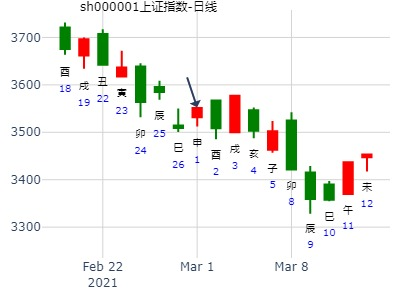

主帖标题: 占事: 600030中信证券2015年走势--不断更新周卦
占事: 600030本周二到周五走势
起卦方式：手动摇卦
公历时间：2015年1月20日9时45分
干支：甲午年 丁丑月 丙申日 癸巳时
旬空：辰巳 申酉 辰巳 午未
神煞：驿马─寅 桃花─酉 日禄─巳 贵人─酉，亥
坤宫：泽天夬
六神 伏 神 【本 卦】
青龙 ▄▄ ▄▄ 兄弟丁未土
玄武 ▄▄▄▄▄ 子孙丁酉金 世
白虎 ▄▄▄▄▄ 妻财丁亥水
螣蛇 ▄▄▄▄▄ 兄弟甲辰土
勾陈 父母乙巳火 ▄▄▄▄▄ 官鬼甲寅木 应
朱雀 ▄▄▄▄▄ 妻财甲子水
周二申 开板 周三酉涨 周四戌调 周五亥冲高回落
主帖标题: 002137麦达数字下周13-17涨跌--手摇卦
公历时间：2020年1月12日12时7分
干 支：己亥年 丁丑月 甲寅日 庚午时
旬 空：辰巳 申酉 子丑 戌亥
坤宫：泽天夬
六神 伏 神 【本 卦】
玄武 ▄▄ ▄▄ 兄弟丁未土
白虎 ▄▄▄▄▄ 子孙丁酉金 世
螣蛇 ▄▄▄▄▄ 妻财丁亥水
勾陈 ▄▄▄▄▄ 兄弟甲辰土
朱雀 父母乙巳火 ▄▄▄▄▄ 官鬼甲寅木 应
青龙 ▄▄▄▄▄ 妻财甲子水
出生：2020 年 性别：男 占事：测2020.2.12-2.14哪日是顶？
公历起卦时间：2020年2月13日10时26分 (电脑自动)
干支：庚子年 戊寅月 丙戌日 癸巳时 （日空：午未）
坤宫：泽天夬 坤宫：泽天夬
六神 伏神 本 卦 变 卦
青龙 兄弟丁未土 ▅▅ ▅▅ 兄弟丁未土 ▅▅ ▅▅
玄武 子孙丁酉金 ▅▅▅▅▅ 世 子孙丁酉金 ▅▅▅▅▅ 世
白虎 妻财丁亥水 ▅▅▅▅▅ 妻财丁亥水 ▅▅▅▅▅
腾蛇 兄弟甲辰土 ▅▅▅▅▅ 兄弟甲辰土 ▅▅▅▅▅
勾陈 父母乙巳火 官鬼甲寅木 ▅▅▅▅▅ 应 官鬼甲寅木 ▅▅▅▅▅ 应
朱雀 妻财甲子水 ▅▅▅▅▅ 妻财甲子水 ▅▅▅▅▅
主帖标题: 上证底部
2020.214丁亥日星期五-2.21甲午哪日底？
排卦：元亨利贞网六爻在线排盘系统 http://www.china95.net
公历起卦时间：2020年2月15日8时59分 (电脑自动)
干支：庚子年 戊寅月 戊子日 丙辰时 （日空：午未）
坤宫：泽天夬 坤宫：泽天夬
六神 伏神 本 卦 变 卦
朱雀 兄弟丁未土 ▅▅ ▅▅ 兄弟丁未土 ▅▅ ▅▅
青龙 子孙丁酉金 ▅▅▅▅▅ 世 子孙丁酉金 ▅▅▅▅▅ 世
玄武 妻财丁亥水 ▅▅▅▅▅ 妻财丁亥水 ▅▅▅▅▅
白虎 兄弟甲辰土 ▅▅▅▅▅ 兄弟甲辰土 ▅▅▅▅▅
螣蛇 父母乙巳火 官鬼甲寅木 ▅▅▅▅▅ 应 官鬼甲寅木 ▅▅▅▅▅ 应
勾陈 妻财甲子水 ▅▅▅▅▅ 妻财甲子水 ▅▅▅▅▅
主帖标题: 试测方大炭素3.1收盘走势
试测方大炭素3.2收盘走势
公历起卦时间：2021年2月27日7时54分 (电脑自动)
干支：辛丑年 庚寅月 丙午日 壬辰时 （日空：寅卯）
神煞：驿马－申 桃花－卯 日禄－巳 贵人－酉，亥
坤宫：泽天夬 坤宫：泽天夬
六神 伏神 本 卦 变 卦
青龙 兄弟丁未土 ▅▅ ▅▅ 兄弟丁未土 ▅▅ ▅▅
玄武 子孙丁酉金 ▅▅▅▅▅ 世 子孙丁酉金 ▅▅▅▅▅ 世
白虎 妻财丁亥水 ▅▅▅▅▅ 妻财丁亥水 ▅▅▅▅▅
螣蛇 兄弟甲辰土 ▅▅▅▅▅ 兄弟甲辰土 ▅▅▅▅▅
勾陈 父母乙巳火 官鬼甲寅木 ▅▅▅▅▅ 应 官鬼甲寅木 ▅▅▅▅▅ 应
朱雀 妻财甲子水 ▅▅▅▅▅ 妻财甲子水 ▅▅▅▅▅

主帖标题: 3.26上证收盘走势？3.26 znde bfbgw +2yn?
出生：2020 年 性别：男 占事：没填
公历起卦时间：2020年3月25日17时16分 (电脑自动)
干支：庚子年 己卯月 丁卯日 己酉时 （日空：戌亥）
神煞：驿马－巳 桃花－子 日禄－午 贵人－酉，亥
坤宫：泽天夬 坤宫：泽天夬
六神 伏神 本 卦 变 卦
青龙 兄弟丁未土 ▅▅ ▅▅ 兄弟丁未土 ▅▅ ▅▅
玄武 子孙丁酉金 ▅▅▅▅▅ 世 子孙丁酉金 ▅▅▅▅▅ 世
白虎 妻财丁亥水 ▅▅▅▅▅ 妻财丁亥水 ▅▅▅▅▅
螣蛇 兄弟甲辰土 ▅▅▅▅▅ 兄弟甲辰土 ▅▅▅▅▅
勾陈 父母乙巳火 官鬼甲寅木 ▅▅▅▅▅ 应 官鬼甲寅木 ▅▅▅▅▅ 应
朱雀 妻财甲子水 ▅▅▅▅▅ 妻财甲子水 ▅▅▅▅▅

测航天通信，有没有短线行情
2010年4月16日 10时35分 (起卦方式：手动指定)
元亨利贞网六爻排盘程序 http://www.china95.net
干支：庚寅年 庚辰月 丙申日 癸巳时 日空亡：辰巳
坤宫：泽天夬 坤宫：泽天夬
六神 伏神 本 卦 变 卦
青龙 兄弟未土 ▅▅ ▅▅ 兄弟未土 ▅▅ ▅▅
玄武 子孙酉金 ▅▅▅▅▅ 世 子孙酉金 ▅▅▅▅▅ 世
白虎 妻财亥水 ▅▅▅▅▅ 妻财亥水 ▅▅▅▅▅
螣蛇 兄弟辰土 ▅▅▅▅▅ 兄弟辰土 ▅▅▅▅▅
勾陈 父母巳火 官鬼寅木 ▅▅▅▅▅ 应 官鬼寅木 ▅▅▅▅▅ 应
朱雀 妻财子水 ▅▅▅▅▅ 妻财子水 ▅▅▅▅▅
马后炮：亥日本该涨，巳空冲实，反而跌。申日莫非冲寅木应爻暗动，大跌。
主题：键桥通讯在十天内的走势走势--乾隆通宝手摇卦
丙申 壬辰 丙寅 癸巳 (戌亥空)
丙申年三月初八
(2016/04/14 10:30:00)
泽天夬
青龙 兄弟未土 ∥
玄武 子孙酉金 ／ 世
白虎 妻财亥水 ／
腾蛇 兄弟辰土 ／
父母巳火：勾陈 官鬼寅木 ／ 应
朱雀 妻财子水 ／
此卦辰月申日易暴跌。莫非冲应爻暗动。参考前卦航天通信2010-04-16，申日也是暴跌。
主帖标题: 2020 0407 此股涨跌，什么时间买入 ？
出生：2020 年 性别：男 占事：没填 002，，
排卦：元亨利贞网六爻在线排盘系统 http://www.china95.net
公历起卦时间：2020年4月6日20时46分 (在线摇卦)
干支：庚子年 庚辰月 己卯日 甲戌时 （日空：申酉）
坤宫：泽天夬 坤宫：泽天夬
六神 伏神 本 卦 变 卦
勾陈 兄弟丁未土 ▅▅ ▅▅ 兄弟丁未土 ▅▅ ▅▅
朱雀 子孙丁酉金 ▅▅▅▅▅ 世 子孙丁酉金 ▅▅▅▅▅ 世
青龙 妻财丁亥水 ▅▅▅▅▅ 妻财丁亥水 ▅▅▅▅▅
玄武 兄弟甲辰土 ▅▅▅▅▅ 兄弟甲辰土 ▅▅▅▅▅
白虎 父母乙巳火 官鬼甲寅木 ▅▅▅▅▅ 应 官鬼甲寅木 ▅▅▅▅▅ 应
螣蛇 妻财甲子水 ▅▅▅▅▅ 妻财甲子水 ▅▅▅▅▅
主帖标题: 某股明天
出生：2021 年 性别：男 占事：00240 明天
公历起卦时间：2021年4月15日17时15分 (在线摇卦)
干支：辛丑年 壬辰月 癸巳日 辛酉时 （日空：午未）
坤宫：泽天夬 坤宫：泽天夬
六神 伏神 本 卦 变 卦
白虎 兄弟丁未土 ▅▅ ▅▅ 兄弟丁未土 ▅▅ ▅▅
螣蛇 子孙丁酉金 ▅▅▅▅▅ 世 子孙丁酉金 ▅▅▅▅▅ 世
勾陈 妻财丁亥水 ▅▅▅▅▅ 妻财丁亥水 ▅▅▅▅▅
朱雀 兄弟甲辰土 ▅▅▅▅▅ 兄弟甲辰土 ▅▅▅▅▅
青龙 父母乙巳火 官鬼甲寅木 ▅▅▅▅▅ 应 官鬼甲寅木 ▅▅▅▅▅ 应
玄武 妻财甲子水 ▅▅▅▅▅ 妻财甲子水 ▅▅▅▅▅
注：原贴信息不详，00240明天，不知道是哪个？暂以002040，002400，与上证一起参考。
占事：600871石化油服下午涨跌
公历起卦时间：2016年5月11日12时14分 (电脑自动)
干支：丙申年 癸巳月 癸巳日 戊午时 （日空：午未）
神煞：驿马－亥 桃花－午 日禄－子 贵人－卯，巳
坤宫：泽天夬 坤宫：泽天夬
六神 伏神 本 卦 变 卦
白虎 兄弟丁未土 ▅▅ ▅▅ 兄弟丁未土 ▅▅ ▅▅
腾蛇 子孙丁酉金 ▅▅▅▅▅ 世 子孙丁酉金 ▅▅▅▅▅ 世
勾陈 妻财丁亥水 ▅▅▅▅▅ 妻财丁亥水 ▅▅▅▅▅
朱雀 兄弟甲辰土 ▅▅▅▅▅ 兄弟甲辰土 ▅▅▅▅▅
青龙 父母乙巳火 官鬼甲寅木 ▅▅▅▅▅ 应 官鬼甲寅木 ▅▅▅▅▅ 应
玄武 妻财甲子水 ▅▅▅▅▅ 妻财甲子水 ▅▅▅▅▅
《周易》——泽天决 兑上乾下决：扬于王庭，孚号，有厉，告自邑，
主帖标题: 上证巳月涨跌
公历时间：2022年5月6日8时45分
干 支：壬寅年 乙巳月 己未日 戊辰时
旬 空：辰巳 寅卯 子丑 戌亥
坤宫：泽天夬
六神 伏 神 【本 卦】
勾陈 ▄▄ ▄▄ 兄弟丁未土
朱雀 ▄▄▄▄▄ 子孙丁酉金 世
青龙 ▄▄▄▄▄ 妻财丁亥水
玄武 ▄▄▄▄▄ 兄弟甲辰土
白虎 父母乙巳火 ▄▄▄▄▄ 官鬼甲寅木 应
螣蛇 ▄▄▄▄▄ 妻财甲子水
马后炮：前卦 600871-2016-05-11是跌。此卦一路涨。
妻财月破日克，看似无有生机？
然而子丑空，29日子大涨，5日午也涨。
占事：今明持有大金融走势
公历起卦时间：2015年6月11日12时25分 (在线摇卦)
干支：乙未年 壬午月 戊午日 戊午时 （日空：子丑）
神煞：驿马－申 桃花－卯 日禄－巳 贵人－丑，未
坤宫：泽天夬 坤宫：泽天夬
六神 伏神 本 卦 变 卦
朱雀 兄弟丁未土 ▅▅ ▅▅ 兄弟丁未土 ▅▅ ▅▅
青龙 子孙丁酉金 ▅▅▅▅▅ 世 子孙丁酉金 ▅▅▅▅▅ 世
玄武 妻财丁亥水 ▅▅▅▅▅ 妻财丁亥水 ▅▅▅▅▅
白虎 兄弟甲辰土 ▅▅▅▅▅ 兄弟甲辰土 ▅▅▅▅▅
腾蛇 父母乙巳火 官鬼甲寅木 ▅▅▅▅▅ 应 官鬼甲寅木 ▅▅▅▅▅ 应
勾陈 妻财甲子水 ▅▅▅▅▅ 妻财甲子水 ▅▅▅▅▅
安井食品到8月底--金玉堂
时间: 2019-06-26 22:09
干支: 己亥年庚午月甲午日 (旬空: 辰巳 )
夬静卦
玄武 ▅▅ ▅▅ 兄弟未土
白虎 ▅▅▅▅▅ 子孙酉金 世
腾蛇 ▅▅▅▅▅ 妻财亥水
勾陈 ▅▅▅▅▅ 兄弟辰土
朱雀 ▅▅▅▅▅ 官鬼寅木 应
青龙 ▅▅▅▅▅ 妻财子水
马后炮：7-8-9月基本都涨不动，午月午日定性了。
方大炭素何时单日3%涨幅？
公历起卦时间：2020年6月19日9时50分 (电脑自动)
干支：庚子年 壬午月 癸巳日 丁巳时 （日空：午未）
神煞：驿马－亥 桃花－午 日禄－子 贵人－卯，巳
坤宫：泽天夬 坤宫：泽天夬
六神 伏神 本 卦 变 卦
白虎 兄弟丁未土 ▅▅ ▅▅ 兄弟丁未土 ▅▅ ▅▅
螣蛇 子孙丁酉金 ▅▅▅▅▅ 世 子孙丁酉金 ▅▅▅▅▅ 世
勾陈 妻财丁亥水 ▅▅▅▅▅ 妻财丁亥水 ▅▅▅▅▅
朱雀 兄弟甲辰土 ▅▅▅▅▅ 兄弟甲辰土 ▅▅▅▅▅
青龙 父母乙巳火 官鬼甲寅木 ▅▅▅▅▅ 应 官鬼甲寅木 ▅▅▅▅▅ 应
玄武 妻财甲子水 ▅▅▅▅▅ 妻财甲子水 ▅▅▅▅▅
应到了旬空的午未??
主帖标题: 北方华创6.7收盘走势？天显时格伏呤
占事：北方华创6.7收盘走势？
公历起卦时间：2021年6月7日6时21分 (电脑自动)
干支：辛丑年 甲午月 丙戌日 辛卯时 （日空：午未）
神煞：驿马－申 桃花－卯 日禄－巳 贵人－酉，亥
坤宫：泽天夬 坤宫：泽天夬
六神 伏神 本 卦 变 卦
青龙 兄弟丁未土 ▅▅ ▅▅ 兄弟丁未土 ▅▅ ▅▅
玄武 子孙丁酉金 ▅▅▅▅▅ 世 子孙丁酉金 ▅▅▅▅▅ 世
白虎 妻财丁亥水 ▅▅▅▅▅ 妻财丁亥水 ▅▅▅▅▅
螣蛇 兄弟甲辰土 ▅▅▅▅▅ 兄弟甲辰土 ▅▅▅▅▅
勾陈 父母乙巳火 官鬼甲寅木 ▅▅▅▅▅ 应 官鬼甲寅木 ▅▅▅▅▅ 应
朱雀 妻财甲子水 ▅▅▅▅▅ 妻财甲子水 ▅▅▅▅▅
主帖标题: 占：7月14日大盘涨跌倒？
[post]占事：7月14日大盘涨跌倒？
公历起卦时间：2015年7月13日18时31分 (手工指定六爻)
干支：乙未年 癸未月 庚寅日 乙酉时 （日空：午未）
坤宫：泽天夬
六神 伏神 本 卦
螣蛇 兄弟未土 ▅▅ ▅▅
勾陈 子孙酉金 ▅▅▅▅▅ 世
朱雀 妻财亥水 ▅▅▅▅▅
青龙 兄弟辰土 ▅▅▅▅▅
玄武 父母巳火 官鬼寅木 ▅▅▅▅▅ 应
白虎 妻财子水 ▅▅▅▅▅
马后炮：卯日似乎没有冲世爻暗动。
14日六K线组合是一阴五阳。
主帖标题: 8月13日沪市大盘
主题：沪市大盘
乙未 甲申 庚申 甲申 (子丑空) 乙未年六月廿八(2015/08/12 15:01:54)
泽天夬
腾蛇 兄弟未土 ∥
勾陈 子孙酉金 ／ 世
朱雀 妻财亥水 ／
青龙 兄弟辰土 ／
父母巳火：玄武 官鬼寅木 ／ 应
白虎 妻财子水 ／
子强财旺，必须涨！[/post]

主帖标题: --七嘴八舌--...--故事杂谈
求测人：某人，男，庚申(1980年)，手工指定(起卦方式)
占问事宜：中国中铁下周走势
公历：2016年8月27日0时0分，星期六。
干支：丙申年 丙申月 辛巳日 戊子时 (卦身：戌) [空亡:申、酉]
主变卦 泽天夬(坤宫)
螣蛇 ▅▅ ▅▅ 兄弟丁未土
勾陈 ▅▅▅▅▅ 子孙丁酉金 世
朱雀 ▅▅▅▅▅ 妻财丁亥水
青龙 ▅▅▅▅▅ 兄弟甲辰土
玄武 父母乙巳火 ▅▅▅▅▅ 官鬼甲寅木 应
白虎 ▅▅▅▅▅ 妻财甲子水
马后炮：世爻子孙空，难大涨。亥水暗动，小涨一天。
占事：金种子酒8月走势。泽天夬静卦。
时间: 2020-08-10 11时40分
干支: 庚子年甲申月乙酉日 (旬空: 午未 )
夬静卦
玄武 ▅▅ ▅▅ 兄弟未土
白虎 ▅▅▅▅▅ 子孙酉金 世
腾蛇 ▅▅▅▅▅ 妻财亥水
勾陈 ▅▅▅▅▅ 兄弟辰土
朱雀 父母巳火▅▅▅▅▅ 官鬼寅木 应
青龙 ▅▅▅▅▅ 妻财子水
主帖标题: 用易学指导炒股
敬请老陈大师就以下的卦看看偏财运在哪个方位？谢谢您！！！！！！！！
占事：从现在起，一年的偏财运在哪个方向？
硬币起卦
干支：己丑年 癸酉月 庚午日 甲申时 （日空：戌亥）
神煞：驿马－申 桃花－卯 日禄－申 贵人－丑，未
坤宫：泽天夬 坤宫：泽天夬
六神 伏神 本 卦 变 卦
腾蛇 兄弟丁未土 ▅▅ ▅▅ 兄弟丁未土 ▅▅ ▅▅
勾陈 子孙丁酉金 ▅▅▅▅▅ 世 子孙丁酉金 ▅▅▅▅▅ 世
朱雀 妻财丁亥水 ▅▅▅▅▅ 妻财丁亥水 ▅▅▅▅▅
青龙 兄弟甲辰土 ▅▅▅▅▅ 兄弟甲辰土 ▅▅▅▅▅
玄武 父母乙巳火 官鬼甲寅木 ▅▅▅▅▅ 应 官鬼甲寅木 ▅▅▅▅▅ 应
白虎 妻财甲子水 ▅▅▅▅▅ 妻财甲子水 ▅▅▅▅▅
主帖标题: 梅花小孩：下周大盘周K卦研究
主题：下周大盘周K卦研究
己亥 癸酉 壬戌 己酉 (子丑空) 己亥年八月廿四(2019/09/22 17:50:04)
泽天夬
白虎 兄弟丁未 ∥
腾蛇 子孙己酉 ／ 坤
勾陈 妻财辛亥 ／
朱雀 兄弟甲辰 ／
父母乙巳：青龙 官鬼壬寅 ／ 应
玄武 妻财庚子 ／
泽天夬:大市多见急速上扬,但阳气太盛易折,故多见顶急挫
己亥 癸酉 癸亥 癸亥 (子丑空) 己亥年八月廿五(2019/09/23 22:40:52)
泽天夬 乾为天
白虎 兄弟己未 × 兄弟壬戌 ／ 乾
腾蛇 子孙辛酉 ／ 坤 子孙庚申 ／
勾陈 妻财癸亥 ／ 父母戊午 ／
朱雀 兄弟丙辰 ／ 兄弟丙辰 ／ 应父母丁巳：
青龙 官鬼甲寅 ／ 应 官鬼甲寅 ／
玄武 妻财壬子 ／ 妻财壬子 ／

泽天夬静卦，下跌中继。网友么么茶提供。
(2010-11-28 22:04:38) 350885790
占事：下周上海大盘走势
公历起卦时间：2010年11月28日21时47分 (在线摇卦)
干支：庚寅年 丁亥月 壬午日 辛亥时 （日空：申酉）
坤宫：泽天夬 坤宫：泽天夬
六神 伏神 本 卦 变 卦
白虎 兄弟丁未土 ▅▅ ▅▅ 兄弟丁未土 ▅▅ ▅▅
腾蛇 子孙丁酉金 ▅▅▅▅▅ 世 子孙丁酉金 ▅▅▅▅▅ 世
勾陈 妻财丁亥水 ▅▅▅▅▅ 妻财丁亥水 ▅▅▅▅▅
朱雀 兄弟甲辰土 ▅▅▅▅▅ 兄弟甲辰土 ▅▅▅▅▅
青龙 父母乙巳火 官鬼甲寅木 ▅▅▅▅▅ 应 官鬼甲寅木 ▅▅▅▅▅ 应
玄武 妻财甲子水 ▅▅▅▅▅ 妻财甲子水 ▅▅▅▅▅
申日官鬼暗动跌？
主帖标题: 第二十期上证指数预测比赛８日到１２日
起卦方式：手工指定
公历时间：2008年12月8日9时30分 星期一
干支：戊子年 甲子月 壬午日 乙巳时 (旬空：申酉)
神煞：驿马—申 桃花—卯 日禄—亥 贵人—卯，巳
坤宫：泽天夬
六神 伏 神 【本 卦】
白虎 ▅▅ ▅▅ 兄弟丁未土
螣蛇 ▅▅▅▅▅ 子孙丁酉金 世
勾陈 ▅▅▅▅▅ 妻财丁亥水
朱雀 ▅▅▅▅▅ 兄弟甲辰土
青龙 父母乙巳火 ▅▅▅▅▅ 官鬼甲寅木 应
玄武 ▅▅▅▅▅ 妻财甲子水
这是大盘日Ｋ线的静卦信息！
马后炮：午日财爻子水暗动大涨，就未日兄弟当值大跌。
当天与第二天六K线组合就是夬。
占事：万科地产12月走势？
公历起卦时间：2015年12月1日11时37分 (阿晖在线摇卦)
干支：乙未年 丁亥月 辛亥日 甲午时 （日空：寅卯）
坤宫：泽天夬
六神 伏神 本 卦 变 卦
腾蛇 兄弟丁未土 ▅▅ ▅▅
勾陈 子孙丁酉金 ▅▅▅▅▅ 世
朱雀 妻财丁亥水 ▅▅▅▅▅
青龙 兄弟甲辰土 ▅▅▅▅▅
玄武 父母乙巳火 官鬼甲寅木 ▅▅▅▅▅ 应
白虎 妻财甲子水 ▅▅▅▅▅
主帖标题: 测试数理卦测25日大盘
公历起卦时间：2020年12月24日15时10分 (手工指定)
干支：庚子年 戊子月 辛丑日 丙申时 （日空：辰巳）
坤宫：泽天夬 坤宫：泽天夬
六神 伏神 本 卦 变 卦
螣蛇 兄弟丁未土 ▅▅ ▅▅ 兄弟丁未土 ▅▅ ▅▅
勾陈 子孙丁酉金 ▅▅▅▅▅ 世 子孙丁酉金 ▅▅▅▅▅ 世
朱雀 妻财丁亥水 ▅▅▅▅▅ 妻财丁亥水 ▅▅▅▅▅
青龙 兄弟甲辰土 ▅▅▅▅▅ 兄弟甲辰土 ▅▅▅▅▅
玄武 父母乙巳火 官鬼甲寅木 ▅▅▅▅▅ 应 官鬼甲寅木 ▅▅▅▅▅ 应
白虎 妻财甲子水 ▅▅▅▅▅ 妻财甲子水 ▅▅▅▅▅
数理卦，测25日日卦。
总体看，兄弟辰空，兄弟未土处六爻，兄弟仍在肆虐中。今天丑日，兄弟旺，跌。
今天兄旺官弱，明天寅日，官旺，兄弟由旺转弱，说明空多转换。
虽然孙财还是弱，但官方护盘，和昨天日卦相应。
明天看多。

主帖标题: 试测12.16上证收盘个位数？
公历起卦时间：2021年12月16日10时3分 (电脑自动)
干支：辛丑年 庚子月 戊戌日 丁巳时 （日空：辰巳）
神煞：驿马－申 桃花－卯 日禄－巳 贵人－丑，未
坤宫：泽天夬 坤宫：泽天夬
六神 伏神 本 卦 变 卦
朱雀 兄弟丁未土 ▅▅ ▅▅ 兄弟丁未土 ▅▅ ▅▅
青龙 子孙丁酉金 ▅▅▅▅▅ 世 子孙丁酉金 ▅▅▅▅▅ 世
玄武 妻财丁亥水 ▅▅▅▅▅ 妻财丁亥水 ▅▅▅▅▅
白虎 兄弟甲辰土 ▅▅▅▅▅ 兄弟甲辰土 ▅▅▅▅▅
螣蛇 父母乙巳火 官鬼甲寅木 ▅▅▅▅▅ 应 官鬼甲寅木 ▅▅▅▅▅ 应
勾陈 妻财甲子水 ▅▅▅▅▅ 妻财甲子水 ▅▅▅▅▅